3 Version control
What Miles said on the matter:
There are still a lot of people that find git intimidating and still potential for some things to go badly for a project if git is used in the wrong way. I once had a colleague who assured me they knew how to use git proceed to use a repo like their personal dropbox folder. Perhaps the details of git usage can be basically waved away, but some detail about good git workflow could be incorporated. For example: The branching model to use. IMHO trunk-based development works much better than gitflow for analysis teams. Version number discipline. Why you always bump the version number when making changes to your packages. Why keeping commits small and confined to just one target at a time if possible is useful when tracing problems with a pipeline.
Modern software development would be impossible without version control systems, and the same goes for building analytical pipelines that are reproducible and robust. It doesn’t really matter what the output of the pipeline is: a simple graph, a report with a statistical analysis, a scientific publication, a trained machine learning model that you want to hook to an API… if the code to the project is not versioned, you incur major risks.
But what is version control anyway?
Version control tools make it easy to keep track of the changes that were made to text files (like R scripts). Any change made to any file of a project is cataloged, making it possible to trace back how the file changed, who made the changes, and when these changes were made. Using version control it is also quite easy to collaborate on a project by forcing team members to deal explicitly with the potential conflicts that might arise when the same file got changed by different people at the same time. Should your computer get lost, stolen, or explode, your projects are safely backed up on a server: this is because version control tools make use of a server which keeps track of all the changes (and in some cases, this server is actually your team mates’ computers!)
Version control tools also make it easy to experiment with new ideas. You can start new branches which essentially make a copy of your current project. In this new branch, you can safely experiment with new features, and if the experiments are not conclusive, you can simply discard this branch: the original copy of your project will remain untouched. We will also use branches to implement features and fix bugs quickly, in a paradigm called trunk-based development.
There are several version control tools out there, but Git is undoubtedly the most popular one. You might have heard of Github; this is a service that hosts repositories for your projects, and provides other project management tools such as an issue tracker, project wiki, feature requests… and also very importantly continuous integration. Don’t worry if this all sounds very abstract: by the end of this chapter you will have all the basic knowledge to use Git and Github.com for your projects.
Git is a tool that you must install on your computer to get started. Once Git is installed, you can immediately start using it; you don’t need to open an account on Github (or a similar service), but it is recommended to make collaboration easier (it is possible to collaborate with several people using Git without a service like Github, by setting up a bare repository on a server on network drive you control, but this is outside the scope of this book).
You should know Github offers private repositories for free, so if you don’t want your work to be accessible to the public, that is possible. Only people that you invite to your private repositories will be able to see the code and collaborate with you. It is also possible that your work place has set up a self-hosted Git platform, ask your IT department! Usually these self-hosted platforms are Gitea or Gitlab instances. Gitea, Gitlab, Bitbucket, Codeberg, these are all similar services to Github. All have their own advantages and disadvantages. The advantages of Github is twofold:
- It has a very large community of users;
- Its continuous integration service is incredibly useful, and free for up to 2000 minutes a month.
Disadvantages are:
- It has been bought by Microsoft in 2018;
- It is not possible to self-host an instance of Github (not for free at least).
The fact it is owned by Microsoft may not seem like an issue, but Microsoft’s track record of previous acquisitions is not great (Nokia, Skype), and the recent discussions about using source code hosted on Github to train machine learning models (Copilot) can make one uneasy about relying too much on Github.
So while we are going to use Github to host our projects in the remainder of this book, almost everything you are going to learn will be easily transferable to another code hosting platform such as Gitlab or Bitbucket, should you want to switch (or if your workplace has a self-hosted instance from one of Github’s competitors). Installing and configuring Git will be exactly the same regardless of the hosting service we use, and all the commands we will use to actually interact with our repositories will be the same as well. So why did we write almost everything is the same across any of the code hosting platforms? Well, the two advantages we cited above really give Github an edge; many developers, researchers and data scientists have a Github account already and so if one day you need to collaborate with people, chances are they have an account on Github and not on another code hosting platform.
Also, the 2000 minutes of free computing time are really more than enough for the continuous integration of your project (which will be one of the last topics we will study in this book).
By the way, if you’re using a cloud service like Dropbox, Onedrive and the like, DO NOT put projects tracked by Git in them! We really need to stress this: do not track projects with both something like Dropbox and Git. This is because Dropbox and similar services do not deal gracefully with conflicts: if two collaborators change the same file, Dropbox makes two copies of the files. One of the collaborators then has to manually deal with this. The issue is that inside a project that is being tracked by Git, there is a hidden folder with many files that get used for synching the project and making sure that everything runs smoothly. If you put a Git-enabled project inside a Dropbox folder, these files will get accessed simultaneously by different people, and Dropbox will start making copies of these because of conflicts. This really messes up the project and can lead to data loss. Let Git handle the tracking and the collaborating for you. It might seem more complex than a service like Dropbox, and it is, but it is immensely more powerful, and what steep learning curve it might have, it more than makes up for it with the many features it makes available at your finger tips.
Finally, before starting, there is something important that you need to understand, and people sometimes get confused by it: if a repository is public, this does not mean that anyone can make changes to the code. What this means is that anyone can fork the repository (essentially making a copy of the repository to their Github account) and then suggest some edits in a so-called pull request. The maintainer and owner of the original project can then accept these edits or not.
In the remainder of this chapter, you are going to learn how to set up Git on your machine, open a Github account, and start using it right away. Then, we are going to show you several scenarios:
- How to collaborate, as a team, on a project;
- How to contribute to someone else’s project;
- Some best practices and Github features that you need to be aware of.
3.1 Installing Git and opening a Github account
Git is a program that you install on your computer. If you’re running a Linux distribution, chances are Git is already installed. Try to run the following command in a terminal to see if this is the case:
which gitIf a path like /usr/bin/git gets shown, congratulations, you can skip the rest of this paragraph. If something like:
/usr/bin/which: no git in (/home/username/.local/bin:/home/username/bin:/usr/local/bin:/usr/bin:/usr/local/sbin:/usr/sbin)gets shown instead, then this means that Git is not installed on your system. To install Git, use your distribution’s package manager, as it is very likely that Git is packaged for your system. On Ubuntu, arguably the most popular Linux distribution, this means running:
sudo apt-get update
sudo apt-get install gitOn macOS and Windows, follow the instructions from the Git Book. It should be as easy as running an installer.
Depending on your operating system, a graphical user interface might have been installed with Git, making it possible to interact with Git outside of the command line. It is also possible to use Git from within RStudio and many other editors have interfaces to Git as well.
We are not going to use any graphical user interface however. This is because there is no common, universal graphical user interface; they all work slightly differently. The only universal is the command line. Also, learning how to use Git via the command line will make it easier the day you will need to use it from a server, which will very likely happen. It also makes our job easier: it is simpler to tell you which commands to run and explain them to you than littering the book with dozens upon dozens of screenshots that might get outdated as soon as a new version of the interface gets released.
Don’t worry, using the command line is not as hard as it sounds.
If you don’t have already a Github account, now is the time to create one. Just go over to https://github.com/ and simply follow the instructions and select the free tier to open your account.
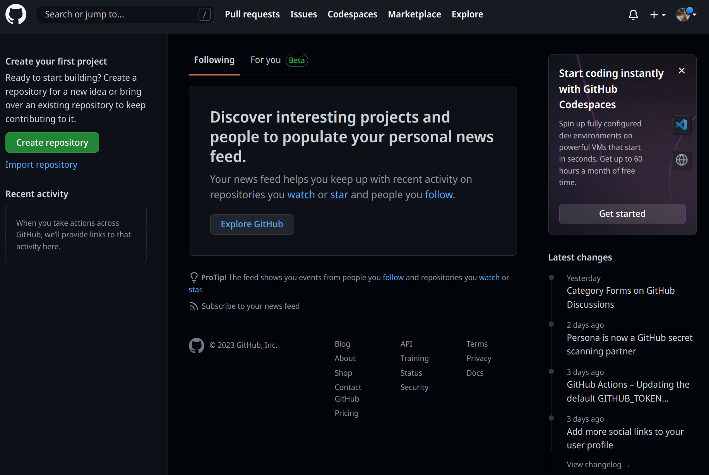
Now that we have an opened account, we can go to the folder that contains the two scripts we wrote at the start of the book.
3.2 Git superbasics
Open the folder that contains the two scripts in a file explorer. On most Linux desktop environments you should be able to right click inside that folder anywhere and select an option titled something like “Open Terminal here”. On Windows, do the same, but the option is titled “Open Git Bash here”. On macOS, you need to first activate this option. Simply google for “open terminal at folder macOS” and follow the instructions. It is also possible to drag and drop a folder into a terminal which will then open the correct path in the terminal. Another option, of course, is to simply open a terminal and navigate to the correct folder using cd (change directory:
cd /home/user/housing/(The above command assumes that our project is inside a folder called “housing”). Make sure that you are in the right folder by listing the contents of the folder:
lsuser@localhost ➤ ls
analysis.R save_data.R(on Linux you could also try ll which is often available. It is an alias for ls -l which provides a more detailed view. There’s also ls -la which also lists hidden files).
It’s now time to start tracking these files using Git. In the same window in which we ran ls, run now the following git command:
git inituser@localhost ➤ git inithint: Using 'master' as the name for the initial branch. This default branch name
hint: is subject to change. To configure the initial branch name to use in all
hint: of your new repositories, which will suppress this warning, call:
hint:
hint: git config --global init.defaultBranch <name>
hint:
hint: Names commonly chosen instead of 'master' are 'main', 'trunk' and
hint: 'development'. The just-created branch can be renamed via this command:
hint:
hint: git branch -m <name>
Initialized empty Git repository in /home/user/six_to/housing/.git/Take some time to read the hints. Many git commands give you hints and it’s always a good idea to read them. This hint here tells us that the default branch name is “master” and that this is subject to change. For example, if you create a repository on Github, they suggest “main” as the name for the default branch. You need to pay attention to this, because when we will start interacting with our Github repository, we need to make sure that we have the right branch name in mind. Also, note that because the “master” branch is the most important branch, it get sometimes referred to as the “trunk”. Let’s now run this other git command:
user@localhost ➤ git statusOn branch master
No commits yet
Untracked files:
(use "git add <file>..." to include in what will be committed)
analysis.R
save_data.R
nothing added to commit but untracked files present (use "git add" to track)Git tells us quite clearly that it sees two files, but that they’re currently not being tracked. So if we would modify them, Git would not keep track of the changes. So it’s a good idea to just do what Git tells us to do, let’s add them so that Git can track them:
user@localhost ➤ git addNothing specified, nothing added.
hint: Maybe you wanted to say 'git add .'?
hint: Turn this message off by running
hint: "git config advice.addEmptyPathspec false"Shoot, simply running git add does do us any good. We need to specify which files we want to add. We can name them one by one, for example git add file1.R file2.txt etc, but if we simply want to track all the files in the folder, we can simply use a . placeholder:
user@localhost ➤ git add .No message this time… is that a good thing? Let’s run git status and see what’s going on:
user@localhost ➤ git statusOn branch master
No commits yet
Changes to be committed:
(use "git rm --cached <file>..." to unstage)
new file: analysis.R
new file: save_data.RNice! Our two files are being tracked now, we can commit the changes. Committing means that we are happy with our work, so we can snapshot it. These snapshots then get uploaded to Github by pushing them. This way, the changes will be available for our coworkers for them to pull. Don’t worry if this is confusing, it won’t be by the end of the chapter. So let’s commit them, but I need to tell you something else first: each commit must have a commit message, and we can write this message as an option to the git commit command:
user@localhost ➤ git commit -am "Project start"Apparently the -am option stands for apply mailbox, which we’re sure makes sense to some people, but we prefer to think of -am as standing for add message. All that remains is pushing this commit to Github. But let’s run git status again:
user@localhost ➤ git statusOn branch master
nothing to commit, working tree cleanThis means that every change is accounted for in a commit. So if we were to push now, we could then set our computer on fire: every change would be safely backed up on Github.com.
Before pushing, let’s see what happens if we change one file. Open “analysis.R” in any editor and simply change the start of the script by adding one line. So go from:
library(dplyr)
library(ggplot2)
library(purrr)
library(tidyr)To:
# This script analyses housing data for Luxembourg
library(dplyr)
library(ggplot2)
library(purrr)
library(tidyr)and now run git status again:
user@localhost ➤ git statusOn branch master
Changes not staged for commit:
(use "git add <file>..." to update what will be committed)
(use "git restore <file>..." to discard changes in working directory)
modified: analysis.R
no changes added to commit (use "git add" and/or "git commit -a")Because the file is being tracked, Git can now tell us that something changed and that we did not commit this change. So if our computer would self-combust, these changes would get lost forever. Better commit them and push them to Github.com as soon as possible!
So first, we need to add these changes to a commit using git add .:
user@localhost ➤ git add .(You can run git status at this point to check if the file was correctly added to be committed.)
Then, we need to commit the changes and add a nice commit message:
user@localhost ➤ git commit -am "Added a comment to analysis.R"Try to keep commit message as short and as explicit as possible. This is not always easy, but it really pays off to strive for short, clear messages. Also, ideally, you would want to keep commits as small as possible. For example, if you’re adding and amending comments in scripts, once you’re done with that make this a commit. Then, maybe clean up some code. That’s another, separate commit. This makes rolling back changes much easier. It is generally not a good idea to code all day and then only push one single big fat commit at the end of the day.
By the way, even if our changes are still not on Github.com, we can still now roll back to previous commits. For example, suppose that I delete the file accidentally by running rm analysis.R:
user@localhost ➤ rm analysis.ROn branch master
Changes not staged for commit:
(use "git add/rm <file>..." to update what will be committed)
(use "git restore <file>..." to discard changes in working directory)
deleted: analysis.R
no changes added to commit (use "git add" and/or "git commit -a")Yep, analysis.R is gone. And deleting on the console usually means that the file is gone forever. But thankfully, we were using Git! Because we did not commit the deletion of the file, we can simple tell Git to ignore our changes. A simple way to achieve this is to stash the changes, and then drop (or delete) the stash:
user@localhost ➤ git stashSaved working directory and index state WIP on master: ab43b4b Added a comment to analysis.RSo the deletion was stashed away, (so in case we want it back we could get it back with git stash pop) and our project was rolled back to the previous commit. Simply take a look at the files:
user@localhost ➤ lsanalysis.R save_data.RThere it is! You can get rid of the stash with git stash drop. But what if we had deleted the file and committed the change? In this scenario we could not use git stash, but we would need to revert back to a commit. Let’s try, first let me remove the file:
user@localhost ➤ rm analysis.Rand check the status with git status:
On branch master
Changes not staged for commit:
(use "git add/rm <file>..." to update what will be committed)
(use "git restore <file>..." to discard changes in working directory)
deleted: analysis.R
no changes added to commit (use "git add" and/or "git commit -a")Let’s add these changes and commit them:
user@localhost ➤ git add .
user@localhost ➤ git commit -am "Removed analysis.R"[master 8e51867] Removed analysis.R
1 file changed, 131 deletions(-)
delete mode 100644 analysis.RWhat’s the status now?
user@localhost ➤ git statusOn branch master
nothing to commit, working tree cleanNow, we’ve done it! git stash won’t be of any help now. So how to recover our file? For this, we need to know to which commit we want to roll back. Each commit not only has a message, but also an unique identifier that you can access with git log:
user@localhost ➤ git logcommit 8e51867dc5ae89e5f2ab2798be8920e703f73455 (HEAD -> master)
Author: User <user@mailbox.com>
Date: Sun Feb 5 17:54:30 2023 +0100
Removed analysis.R
commit ab43b4b1069cd987685253632827f19d7a402b27
Author: User <user@mailbox.com>
Date: Sun Feb 5 17:41:52 2023 +0100
Added a comment to analysis.R
commit df2beecba0101304f1b56e300a3cd713ce7366e5
Author: User <user@mailbox.com>
Date: Sun Feb 5 17:32:26 2023 +0100
Project start
The first one from the top is the last commit we’ve made. We would like to go back to the one with the message “Added a comment to analysis.R”. See the very long string of characters after “commit”? That’s the commit unique identifier, called hash. You need to copy it (or only like the first 10 or so characters, that’s enough as well). By the way, depending on your terminal and operating system, git log may open less to view the log. less is a program that makes it easy to view long documents. Quit it by simply pressing q on your keyboard. We are now ready to revert back to the right commit with the following command:
user@localhost ➤ git revert ab43b4b1069cd98768..HEADand we’re done! Check that all is right by running ls to see that the file magically returned, and git log to read the log of what happened:
user@localhost ➤ git logcommit b7f82ee119df52550e9ca1a8da2d81281e6aac58 (HEAD -> master)
Author: User <user@mailbox.com>
Date: Sun Feb 5 18:03:37 2023 +0100
Revert "Removed analysis.R"
This reverts commit 8e51867dc5ae89e5f2ab2798be8920e703f73455.
commit 8e51867dc5ae89e5f2ab2798be8920e703f73455 (HEAD -> master)
Author: User <user@mailbox.com>
Date: Sun Feb 5 17:54:30 2023 +0100
Removed analysis.R
commit ab43b4b1069cd987685253632827f19d7a402b27
Author: User <user@mailbox.com>
Date: Sun Feb 5 17:41:52 2023 +0100
Added a comment to analysis.R
commit df2beecba0101304f1b56e300a3cd713ce7366e5
Author: User <user@mailbox.com>
Date: Sun Feb 5 17:32:26 2023 +0100
Project startThis small example illustrates how useful Git is, even without using Github, and even if working alone on a project. At the very least it offers you a way to simply walk back changes and gives you a nice timeline of your project. Maybe this does not impress you much, because we live in a world where cloud services like Dropbox made things like this very accessible. But where Git (with the help of a service like Github) really shines is when collaboration is needed. Git and code housting services like Github make it possible to collaborate at very large scale: thousands of developers contribute to the Linux kernel, arguably the most successful open source project ever, powering most of today’s smartphones, servers, super computers and embedded computers.[^].
3.3 Git and Github
So we got some work done on our machine and made some commits. We are now ready to push these commits to Github. “Pushing” means essentially uploading these changes to Github. This makes them available to your coworkers if you’re pushing to a private repository, or makes them available to the world if you’re pushing to a public repository.
Before pushing anything to Github though, we need to create a new repository. This repository will contain the code to our project, as well as all the changes that Git has been tracking on our machine. So if, for example, a new team member joins, he or she will be able to clone the repository to his or her computer and every change, every commit message, every single bit of history of the project will be accessible. If it’s a public repository, anyone will be able to clone the repository and contribute code to it. We are going to walk you true some examples of how to collaborate with Git using Github in the remained of this chapter.
So, let’s first go back to https://github.com/ and create a new repository:

You will then land on this page:
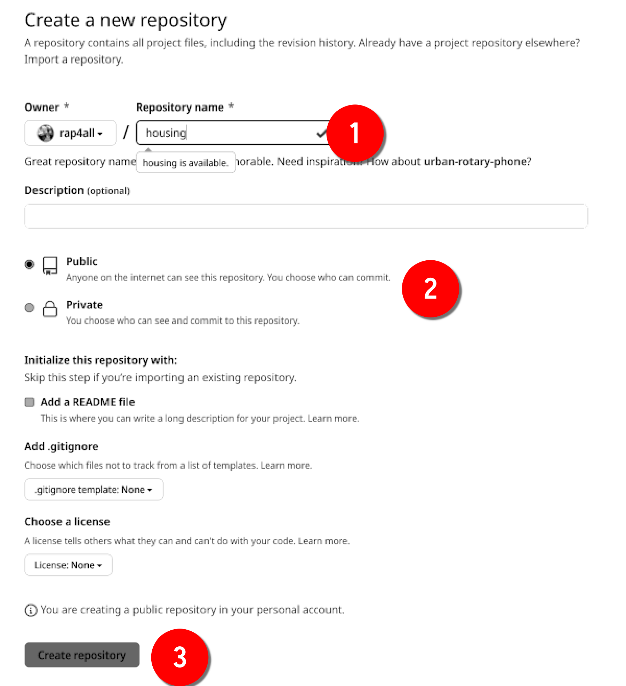
Name your repository, and choose whether it should be open to the word or if it should be private and only accessible to your coworkers. We are going to make it a public repository, but you could make it private and follow along, this would change nothing to what we’re going to learn.
We then land on this page:
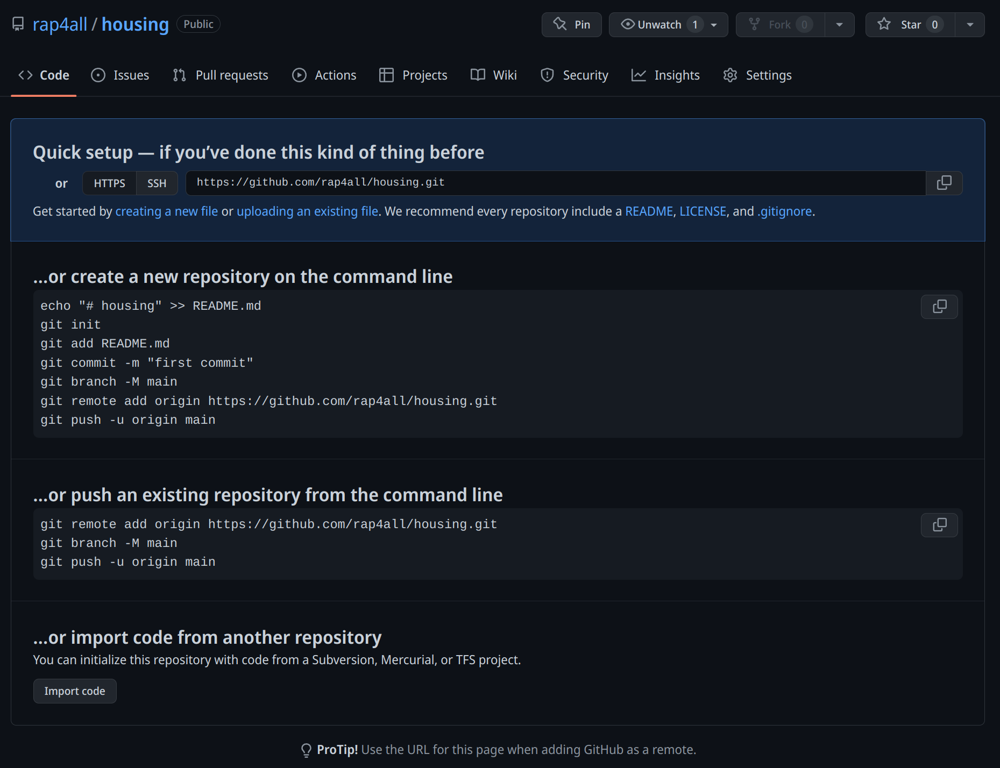
We get some instructions on how to actually get started with our project. The first thing you need to do though is click on “SSH”:
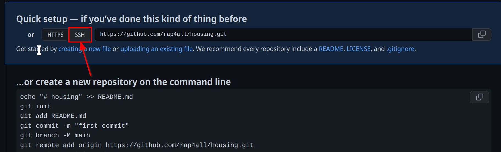
This will changes the links in the instructions from https to ssh. We will explain why this is important in a couple paragraphs. For now, let’s read the instructions. Since we have already started working, we need to follow the instructions title “…or push an existing repository from the command line”. Let’s review these commands. This is what Github suggests we run:
git remote add origin git@github.com:rap4all/housing.git
git branch -M main
git push -u origin mainWhat’s really important is the first command and last command. The first command adds a remote that we name origin. The link you see is the link to our repository. This links our folder in our machine to the Github repository online. So now, every time we push, our changes will get uploaded to Github. The second line renames the branch from “master” to “main”. You are of course free to do so. We will not do it ourselves, since the default branch Git creates is called “master” so we are going to keep using it to avoid confusion. The last command pushes our changes to the “main” branch (but we need to change “main” to “master”).
Let’s do just that:
user@localhost ➤ git remote add origin git@github.com:rap4all/housing.gitThis produces no output. We’re now ready to push:
user@localhost ➤ git push -u origin masterand it fails:
ERROR: Permission to rap4all/housing.git denied to b-rodrigues.
fatal: Could not read from remote repository.
Please make sure you have the correct access rights
and the repository exists.The reason is quite simple: Github has absolutely no idea who we are! Remember, if the repository is public, anyone can clone it. But that doesn’t mean that anyone can simply push code to the repo! This means that we need a way to tell Github that we are the owner of the repository. For this, we need a way to login securely, and we will do so using a public/private rsa key pair. The idea is quite simple; we are going to generate two files on our computer. These two files form a public/private key pair. We are going to upload the public key to Github; and every time we want to interact with Github, Github will check the public key to the private key that we keep on our machine (never, ever, send the private key to anyone). If they match, Github knows that we are who we claim to be and will let us push to the repository. This is why we switched from https to ssh before. https would allow us to login by typing a password each time we push (but actually, not anymore password login was turned off some years ago). It is much easier to not have to login manually and let our key pair do the job for us.
Let’s generate a public/private rsa key pair. Open a terminal on Linux or macOS, or Git Bash on Windows and run the following command:
user@localhost ➤ ssh-keygenThe following lines will appear in your terminal:
Generating public/private rsa key pair.
Enter file in which to save the key (/home/user/.ssh/id_rsa): Simply leave this empty and press enter. This next message now appears:
Enter passphrase (empty for no passphrase): Leave it empty as well. Entering a passphrase is not really needed, since the ssh key pair itself will deal with the login. In some situations a passphrase might be useful, if you’re worried that someone might get physical access to your machine and push code by impersonating you. But if you work with such sensitive data and code that this is a real worry, maybe don’t use Github?
So once you pressed enter, you get asked to confirm the passphrase:
Enter same passphrase again: Here again, simply leave it empty and press enter on your keyboard. Once this is done, you should see this:
Your identification has been saved in /home/user/.ssh/id_rsa
Your public key has been saved in /home/user/.ssh/id_rsa.pub
The key fingerprint is:
SHA256:tPZnR7qdN06mV53Mc36F3mASIyD55ktQJFBAVqJXNQw user@localhost
The key's randomart image is:
+---[RSA 3072]----+
| .*=E*=. |
| o o.oo.. . |
| . . o. o o |
| . ..o. . o |
| +S o.+.|
| .o. o.o*|
| . o. + +=*|
| . o ++*=|
| ..=oo|
+----[SHA256]-----+If now you go to the specified path on the first line (so in our case /home/user/.ssh/ you should see two files, id_rsa and id_rsa.pub, the private and public keys respectively. We’re almost done: what you need to do now is copy the contents of the id_rsa.pub file to Github. Go to your profile settings:
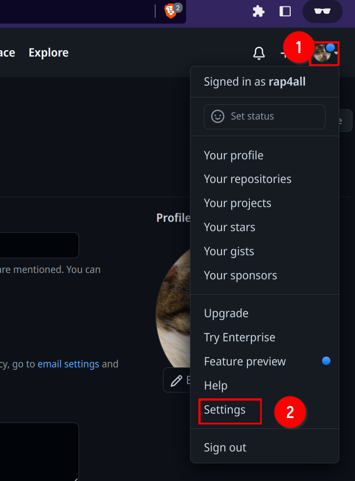
And then click on “SSH and GPG keys”:
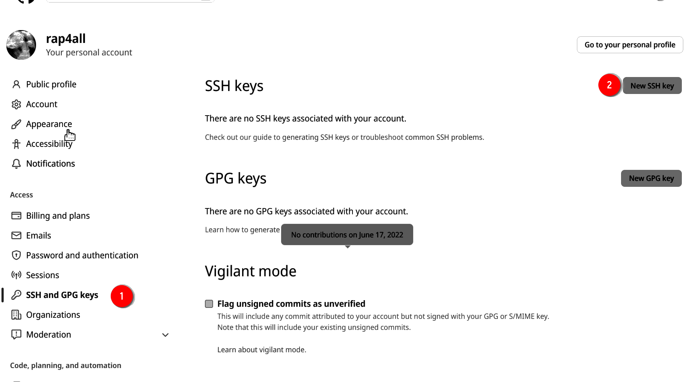
and then click on “New SSH key”. Name this key (it’s a good idea to write something that makes recognizing the machine the key was generated easy) and paste the contents of id_rsa.pub in the text box and click on “add SSH key”:
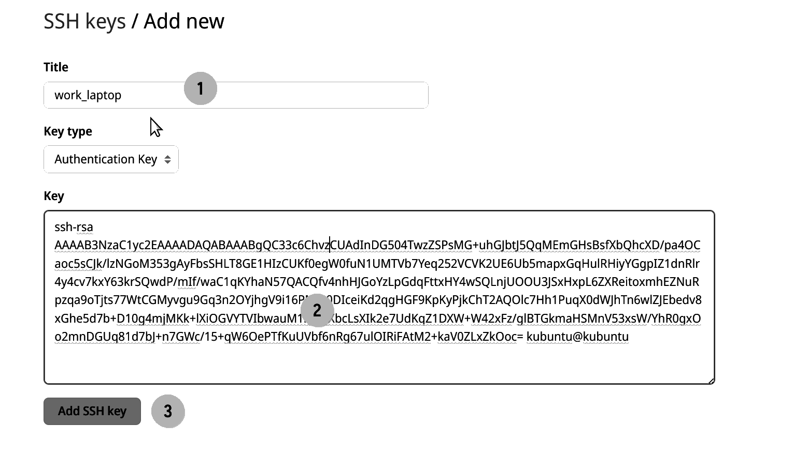
We can now go back to our terminal and try to push again:
user@localhost ➤ git push -u origin masterThe following message gets printed:
The authenticity of host 'github.com (140.82.121.3)' can't be established.
ED25519 key fingerprint is SHA256:+DiY3wvvV6TuJJhbpZisF/zLDA0zPMSvHdkr4UvCOqU.
This key is not known by any other names
Are you sure you want to continue connecting (yes/no/[fingerprint])?Type yes and then you should see the following:
Enumerating objects: 10, done.
Counting objects: 100% (10/10), done.
Delta compression using up to 4 threads
Compressing objects: 100% (9/9), done.
Writing objects: 100% (10/10), 2.77 KiB | 2.77 MiB/s, done.
Total 10 (delta 2), reused 0 (delta 0), pack-reused 0
remote: Resolving deltas: 100% (2/2), done.
To github.com:rap4all/housing.git
* [new branch] master -> master
Branch 'master' set up to track remote branch 'master' from 'origin'.And we’re done! Our commits are now safely backed up on Github. If we go to our repository’s main page, we should see the following:
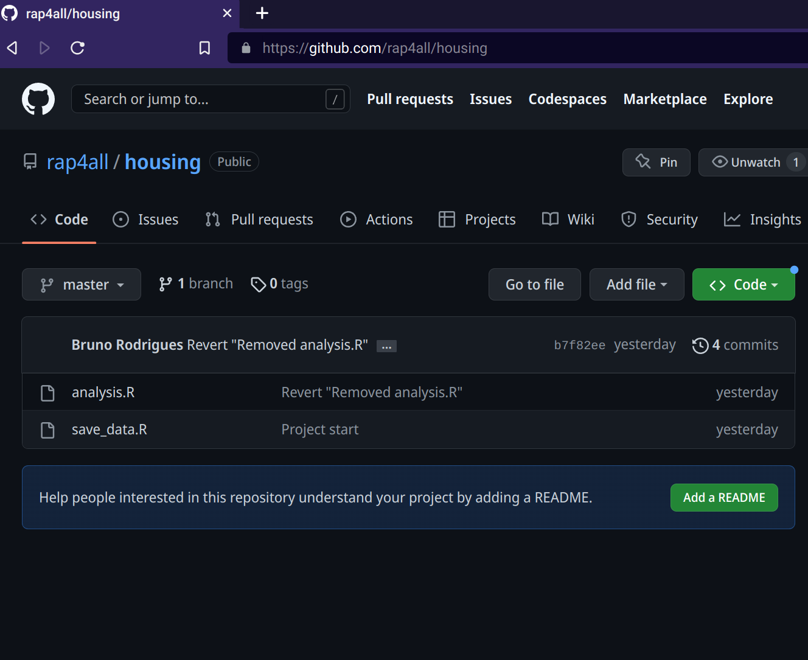
3.4 Getting to know Github
We have succeeded in installing Git and making it work with our Github account. If you use another machine for development, you will need to generate another rsa key pair on that machine and add the public key to Github. If you use another code hosting platform, you can use the same rsa key pair, but will need to add the public key to this other code hosting platform. You can even use the same key pair as a passwordless authentication method for ssh (for example if you work on a server, but this is outside the scope of the present book). Before continuing with Git itself, and learn about collaborating using Git, we are going to take a little tour of Github itself.
Once you’re on your repository’s landing page you see the same files and folders as in the root directory of the project on your computer. In our case here, we see our two files. Github suggests that we add a README file; we are going to ignore this for now. Take a closer look at the menu at the top, below your repository’s name:
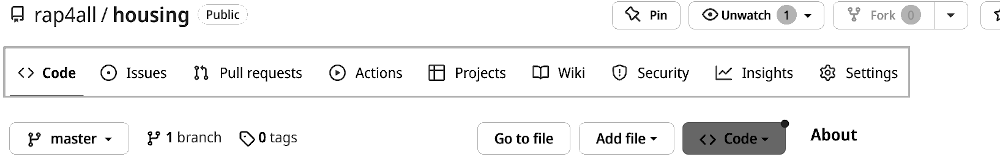
Most important for our needs is the “Issues”, “Pull requests”, “Actions” and “Settings” tab. Let’s start with “Settings”.
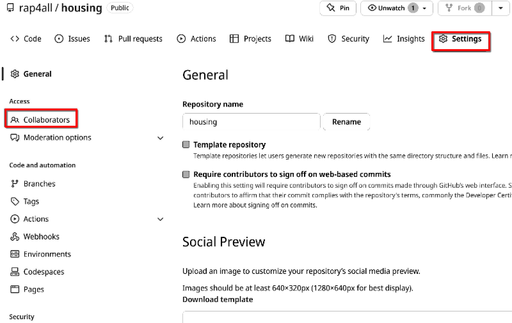
There are many options that you can choose from, but what’s important for our purposes is the “Collaborators” option. This is where you can invite people to contribute to the repository. People that are invited in this way can directly push to the repository. Let’s invite the author of this book:
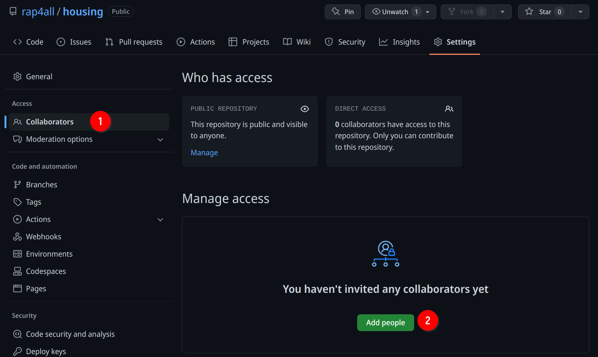
Start by typing the person’s Github username. You can also invite collaborators by providing their email address.
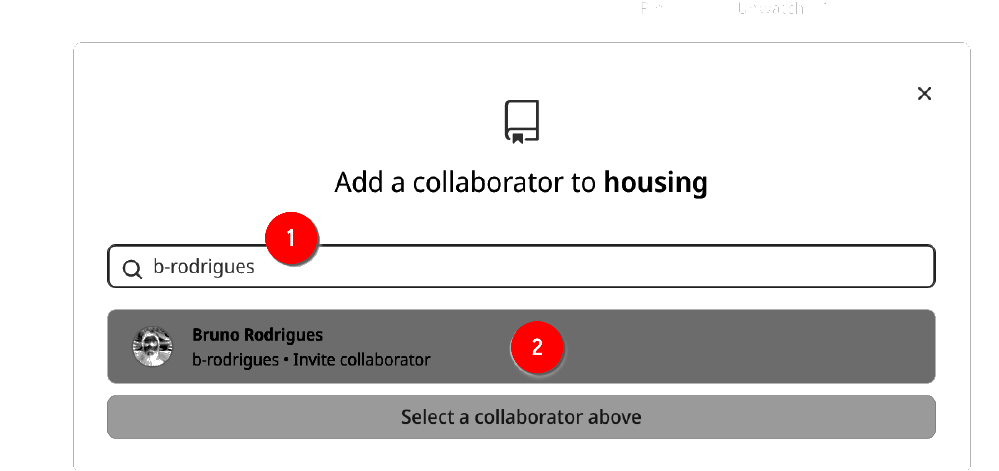
Click then on the user’s profile and he or she should get an invitation per email.
This is what it looks like from the perspective of Bruno’s account now:
It’s important to understand the distinction between inviting someone to contribute to the repository and having someone contribute, even though that person has not been specifically invited to do so. We are going to explore these two scenarios in the next section, but before that, let’s see what the “Issues” tab is about.
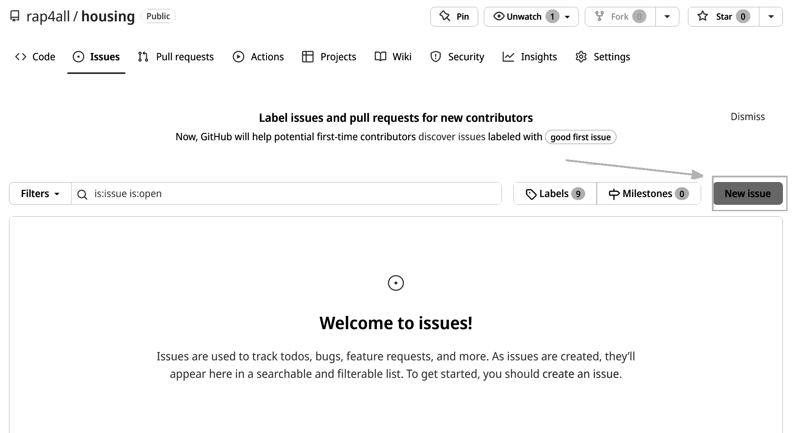
If the repository is public, anyone can open an issue to either submit a bug, or suggest some ideas, and if the repository is private, only invited collaborators can do this.
Let’s open an issue to illustrate how this works:
Give a nice title to the issue (1), add a thorough description (2), (optionally) assign it to someone (3) and (optionally) add a label to it (4), finally click on “Submit new issue” (5) to submit the issue:
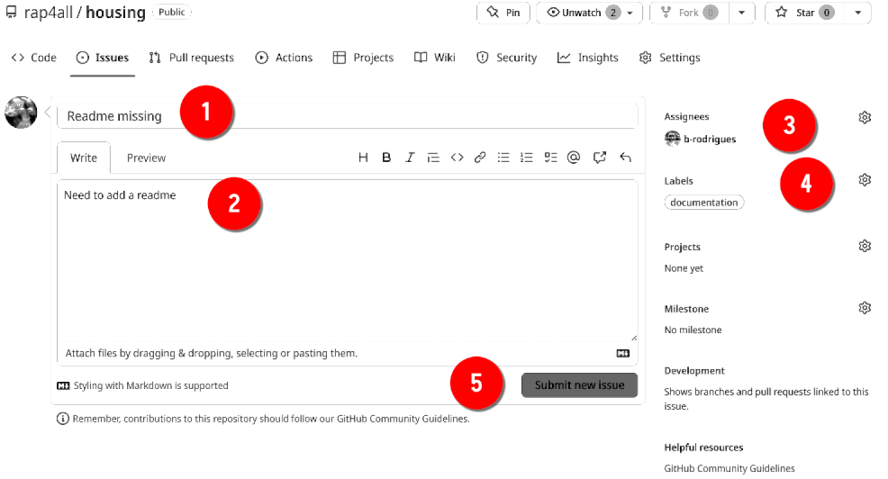
Sometimes issues don’t need to be very long, and act more as reminders than anything else. For example here, the owner of the repository didn’t have the time to add a Readme, but didn’t want to forget to add one later on. The author assigned the issue to Bruno: so it’ll be Bruno’s job to add the Readme. Issue-driven project management is a very valid strategy when working asynchronously and in a decentralized fashion.
If you encountered a bug and want to open an issue, it is very important that you provide a minimal, reproducible example (MRE). MREs are snippets of code that can be run very easily by someone other than yourself and which produce the bug reliably. Interestingly, if you understand what makes an MRE minimal and reproducible, you understand what will make our pipelines reproducible as well. So what’s important for an MRE?
First, the code needs to be self-contained. For example, if some data is required you need to provide the data. If the data is sensitive, you need to think about the bug in greater detail: is the bug due to the structure of the data, or does the bug manifest itself on any kind of data? If that’s the case, use some of the built-in datasets to R (iris, mtcars, etc) for your MRE.
Does your MRE require extra packages to run? Then make this as clear as possible, and not only provide the package names, but also their versions (it is a good idea to copy and paste the output of sessionInfo() at the end of the issue.
Finally, does your example depend on some object defined in the global state? If yes, you also need to provide the code to create this object.
The bar you need to set for an MRE is as follows: bar needed package dependencies that may need to be installed beforehand, people that try to help you should be able to run your script by simply copy and pasting it into an R console. Any other manipulation that you require from them is unacceptable: remember that in open source development, developers very often work in their free time, and don’t owe you tech support! And even if they did, it is always a good idea to make it as easy as possible for them to help you, because it simply increases the likelihood that they will actually help.
Also, writing an MRE can usually make you actually debug the code yourself. Just like in rubber duck debugging, the fact of simply trying to explain the problem can lead to finding what’s wrong. But by writing an MRE, you’re also reducing the problem into its most basic parts, and removing everything unnecessary. By doing so, you might realize that what you thought was a bug of the library was maybe rather a problem between the keyboard and the chair.
So don’t underestimate the usefulness of creating high quality MREs for your issues! One package that can assist you with this is {reprex} (read about it here).
https://www.zdnet.com/article/who-writes-linux-almost-10000-developers/↩︎